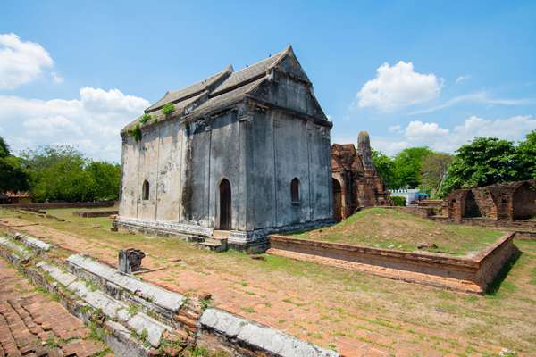
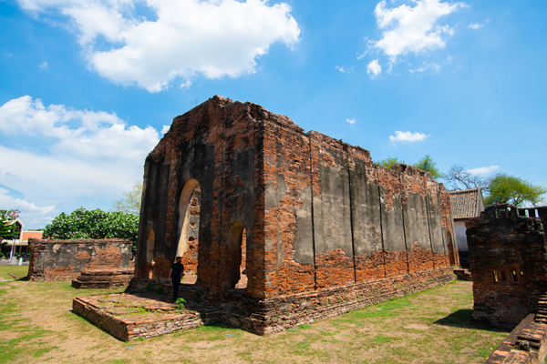

วัดพระศรีรัตนมหาธาตุ


วัดพระศรีรัตนมหาธาตุ เป็นวัดร้างขนาดใหญ่ มีพื้นที่ประมาณ 20 ไร่ ลักษณะแผนผังของวัด
มีปรางค์องค์ใหญ่เป็นประธานตั้งอยู่กึ่งกลางของวัด มีอาคารและเจดีย์ล้อมรอบ
จากรูปแบบสถาปัตยกรรมและประติมากรรมซึ่งปรากฏในวัดสันนิษฐานได้ว่า
วัดนี้มีการสร้างและบูรณะปฏิสังขรณ์กันเรื่อยมาตั้งแต่พุทธศตวรรษที่ 18-19 ในสมัยก่อนสถาปนากรุงศรีอยุธยา
ประมาณ 100 ปี และปรากฏหลักฐานว่า สมเด็จพระมหาจักรพรรดิได้ทรงปฏิสังขรณ์วัดนี้ครั้งหนึ่ง
ต่อมาในสมัยสมเด็จพระนารายณ์มหาราช โปรดฯให้สร้างเจดีย์ระเบียงคดและวิหารพร้อมกับปฏิสังขรณ์อีกครั้งหนึ่ง
และสมัยสมเด็จพระเจ้าอยู่หัวบรมโกศก็ได้ทรงปฏิสังขรณ์อีกครั้งหนึ่งด้วย
วัดพระศรีรัตนมหาธาตุ มีสถาปัตยกรรมที่สำคัญ คือ พระปรางค์ ขนาดใหญ่ ตั้งอยู่กึ่งกลางของวัด
ล้อมรอบด้วยระเบียงคด องค์ปรางค์ประธานก่อด้วยศิลาแลง ด้านทิศตะวันออกมีมุขยื่นออกมา
ด้านหน้าขนาบด้วยปรางค์ขนาดเล็กทางทิศเหนือและทิศใต้ ปรางค์ประธานจึงเป็นปรางค์ 3 องค์
ด้านหน้าของปรางค์ประธานเป็นที่ตั้งของวิหารหลวง (วิหารเก้าห้อง) สร้างในรัชสมัยสมเด็จพระนารายณ์มหาราช
เป็นวิหารขนาดใหญ่ ประตูเป็นสถาปัตยกรรมแบบไทย ส่วนหน้าต่าง เป็นรูปกลีบบัวและมีกำแพงแก้วล้อมรอบ
ศาลาเปลื้องเครื่อง ตั้งอยู่ด้านหน้าถัดจากวิหารหลวงออกไปเป็นที่สำหรับ พระเจ้าแผ่นดินเปลี่ยนเครื่องทรง
ก่อนที่จะเข้าไปประกอบศาสนกิจ นอกจากนี้ยังมีพระเจดีย์ พระปรางค์ขนาดเล็ก อาคารวิหารต่างๆ
ที่ก่อสร้างหลายสมัย
กรมศิลปากร ประกาศขึ้นทะเบียนโบราณสถานเมื่อวันที่ 2 สิงหาคม พ.ศ. 2479


